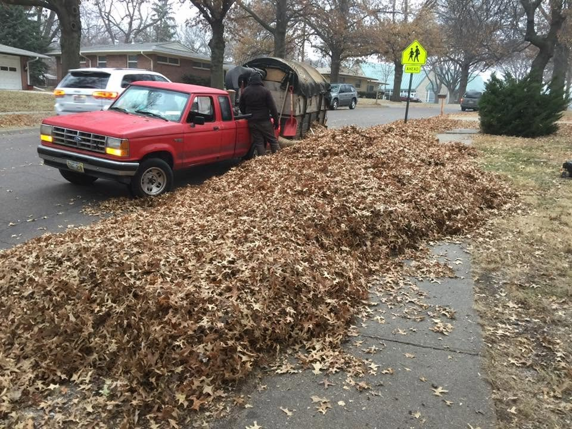
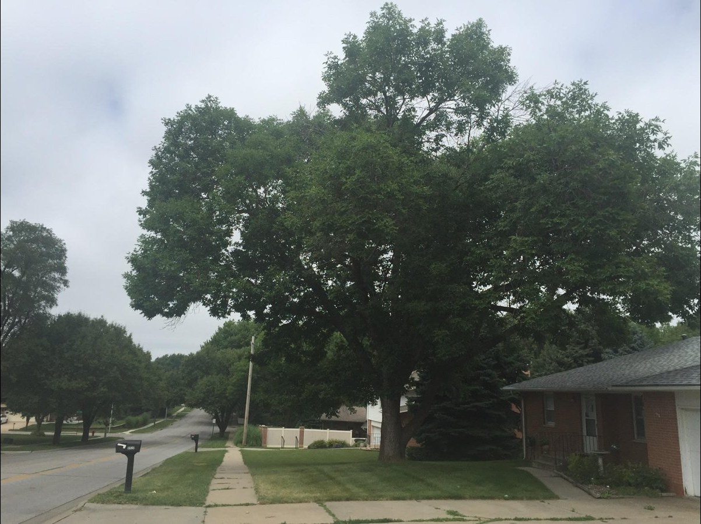
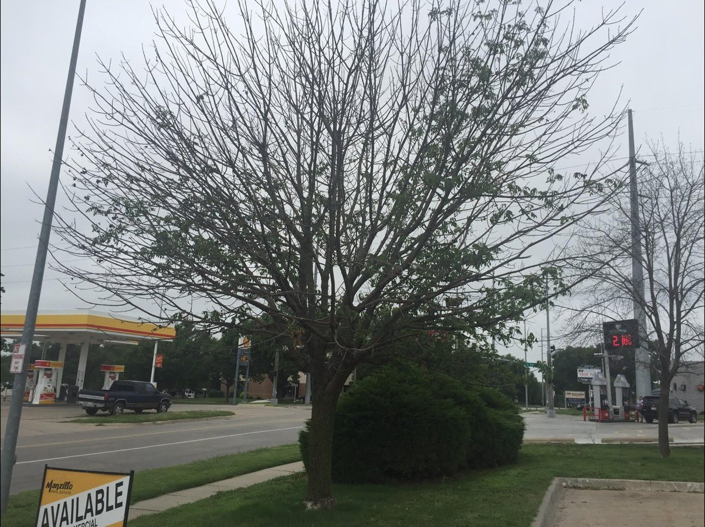
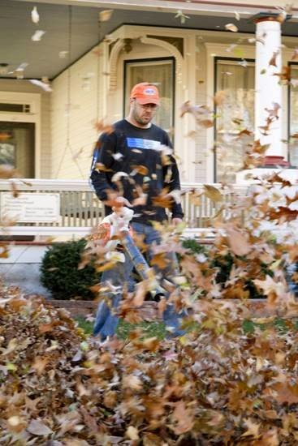

Lincoln tree care, all four seasons.
Frerichs Tree Service has worked Lincoln yards since 1996. One crew and one phone number. Call or text Will and he will set up a time to look at your property.
The year in tree care
What gets done, and when
Spring
April and May
Emerald ash borer treatment, by insecticide injection.
Lawn work starts: power raking, aerating, and overseeding.
Hedge trimming, with the tree work.
Summer
June through August
Tree trimming and removal, all year round.
Lawn and tree consulting, a whole-property analysis.
Lawn seeding and overseeding for thin spots.
Fall
September through November
Leaf cleanup with the Giant Vac, the truck-mounted vacuum.
Iron injections for pin oaks and river birches in late fall.
Gutter cleaning, and lawn overseeding in September and October.
Winter
December through March
Residential snow removal, at $10 to $15 per inch.
Tree trimming and removal keep going through the cold months.
Call or text any time. There is no online booking.
Ash trees
A healthy ash, and one that ran out of time


Frerichs treats ash trees against emerald ash borer with insecticide injection in spring. If your ash is thinning at the top, text Will a photo and he will take a look. See the ash and oak treatments.
Fall in Lincoln
The Giant Vac earns its name

The red truck and the trailer-mounted Giant Vac clear curbside piles that a rake cannot move. See leaf cleanup and snow removal.